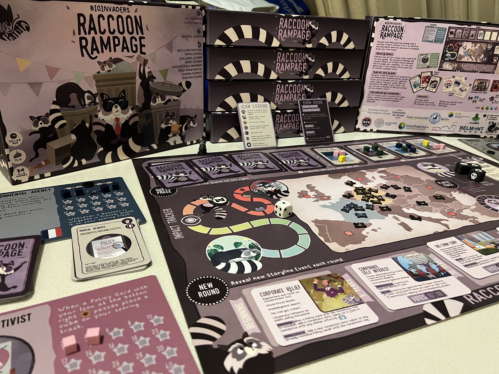
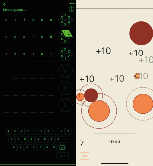
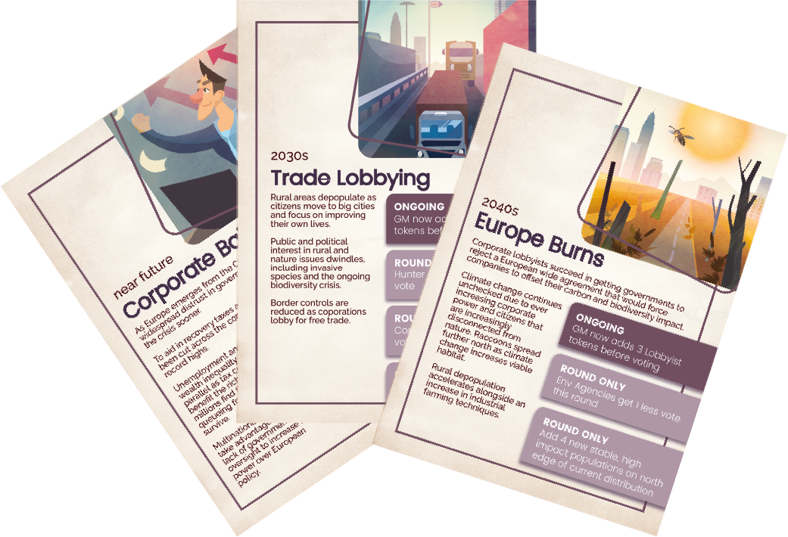

BioInvaders: Raccoon Rampage
A semi-cooperative strategy boardgame where players navigate alliances and rivalries to manage the raccoon invastion in Europe. Perfect for 3-4 players in classrooms or on family game nights, BioInvaders! Raccoon Rampage is ideal for fostering negotiation skills while learning about how to tackle real-world ecological challenges.

Shades: Games and Engagement
cf.me set out to change the way people get daily news by blending editorial content with playful, habitual
interactions. The company later rebranded as Shades News. We were engaged to design a cohesive
experience across the website and mobile app. We designed two iOS games that could act as lightweight,
daily touchpoints. “baw” and “wurd” were conceived as quick, replayable titles that complement reading
sessions—offering snackable play during news breaks and providing new entry points back into the news
experience.

European BioInvasions
A Role-Playing Game aimed at expert and real life stakeholders that have to deal with invasive species, European BioInvasions covers multiple species and how we might manage them in different potential European futures.

Superbmarket
A digital narrative game that draws on science concerning living wages and decent work. Developed in partnership with the University of Glasgow and University of Edinburgh, Superbmarket can be used to develop understanding of the impact of poor quality and low paid work for employees and their leaders.

Gaming Climate Futures
Gaming Climate Futures (2018) is a climate policy simulation we developed with Glasgow Caledonian
University students for UN decision makers that operationalizes the relationship between global
temperature targets and climate tipping points. Delivered as a mixed-media workshop—combining game
mechanics, structured negotiations, storytelling, and co-creation—it functions as a decision-support and
learning tool to deepen understanding of systemic climate risks while strengthening diplomatic
communication. The project was nominated for Best Game at the 2019 International Educational Games
Competition.